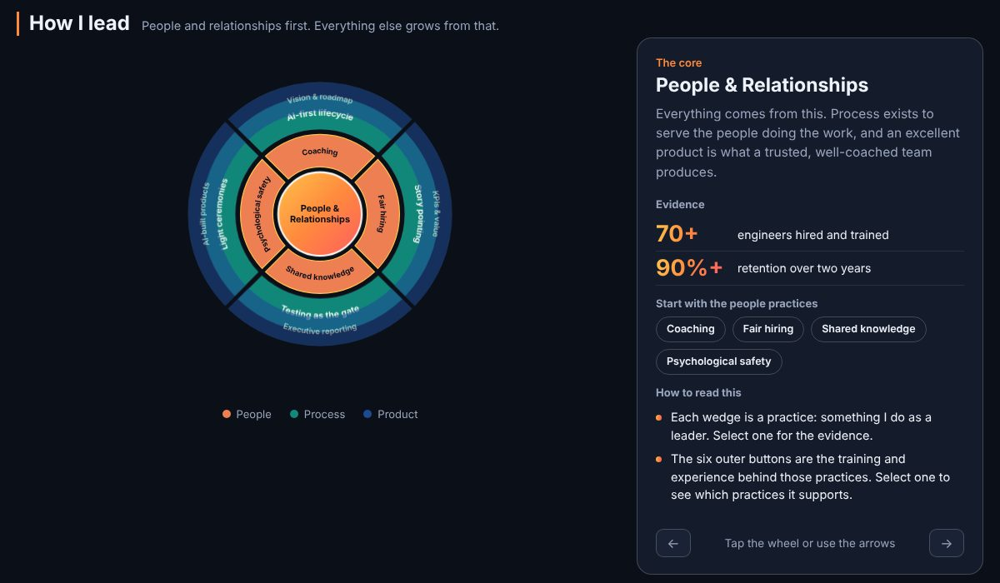

01 · My Personality
People and relationships first.
- An interactive wheel of the twelve practices I use as a leader, across people, process, and product.
- Each practice shows the evidence behind it and how I put it to work.
- Built on six backgrounds: organizational psychology, an MBA, coaching, Agile, AI, and military service.
